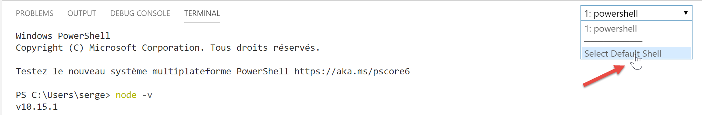
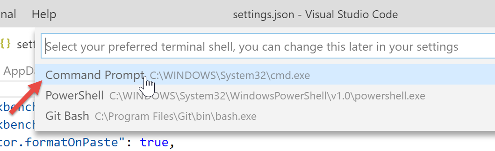
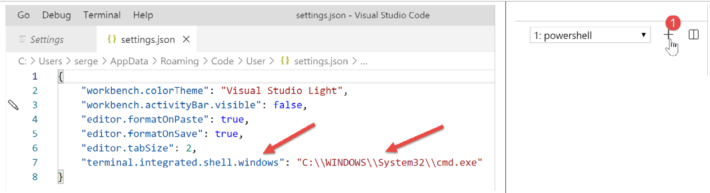
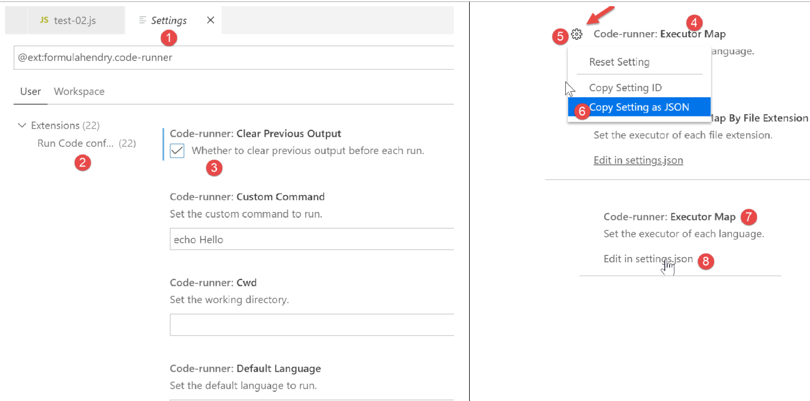
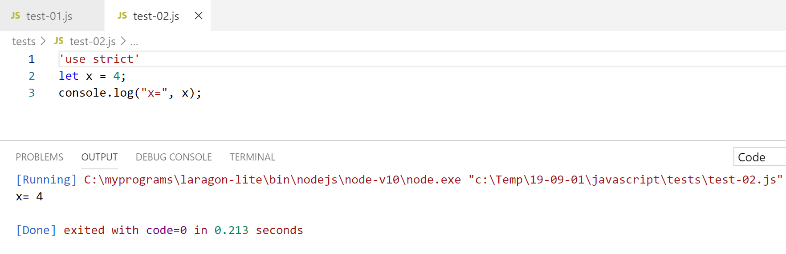

2. Configurar un entorno de desarrollo
Utilizaremos las siguientes herramientas (en Windows 10 x64):
- [Laragon] para ejecutar el servidor web PHP;
- [NetBeans] para editar el código PHP;
- [Visual Studio Code] para escribir código JavaScript;
- [Node.js] para ejecutarlo;
- [npm] para descargar e instalar las librerías JavaScript que necesitaremos;
2.1. Entorno de desarrollo del servidor web
Los scripts PHP se escribieron y probaron en el siguiente entorno:
- un servidor web Apache / SGBD MySQL / entorno PHP 7.3 llamado Laragon;
- el NetBeans 10.0 IDE de desarrollo;
2.1.1. Instalando Laragon
Laragon es un paquete que combina varios componentes de software:
- un servidor web Apache. Lo utilizaremos para escribir scripts web en PHP;
- el sistema de gestión de bases de datos MySQL;
- el lenguaje de scripting PHP;
- un servidor Redis que proporciona almacenamiento en caché para aplicaciones web:
Laragon puede descargarse (marzo de 2019) en la siguiente dirección:


- La instalación [1-5] resulta en la siguiente estructura de directorios:

- [6] contiene el directorio de instalación de PHP;
Lanzamiento [Laragon] visualiza la siguiente ventana:

- [1]: el menú principal de Laragon;
- [2]: el [Start All] botón lanza el servidor web Apache y la base de datos MySQL;
- [3]: El botón [WEB] muestra la página web [http://localhost], que corresponde al fichero PHP [<laragon>/www/index.php], donde <laragon> es la carpeta de instalación de Laragon;
- [4]: el botón [Base de datos] permite gestionar la base de datos MySQL mediante la herramienta [phpMyAdmin] . Debe instalar esta herramienta previamente;
- [5]: El botón [Terminal] abre un terminal de comandos;
- [6]: El botón [Root] abre una ventana del Explorador de Windows situada en la [<laragon>/www] carpeta, que es el directorio raíz del [http://localhost] sitio web. Aquí es donde debe colocar todas las aplicaciones web gestionadas por el servidor Apache de Laragon;
Abramos un terminal Laragon [5]:

- en [1], el tipo de terminal. Hay tres tipos de terminales disponibles en [6];
- en [2, 3]: la carpeta actual;
- En [4], escribe el comando [echo %PATH%], que muestra la lista de carpetas buscadas al buscar un ejecutable. Todas las carpetas principales de Laragon están incluidas en esta ruta de ejecutables, lo que no ocurriría si abriera un símbolo del sistema [cmd] en Windows. En este documento, cuando tenga que escribir comandos para instalar una determinada pieza de software, estos comandos se escriben generalmente en un terminal Laragon;
2.1.2. Instalación del IDE NetBeans 10.0
El IDE NetBeans 10.0 se puede descargar desde la siguiente dirección (marzo de 2019):
https://netbeans.apache.org/download/index.HTML

El archivo descargado es un archivo ZIP que simplemente hay que descomprimir. Una vez instalado e iniciado NetBeans, puede crear su primer proyecto PHP.

- En [1], seleccione la opción Archivo / Nuevo proyecto;
- En [2], seleccione la [PHP] categoría;
- en [3], selecciona el tipo de proyecto [Aplicación PHP];

- En [4], dale un nombre al proyecto;
- En [5], elige una carpeta para el proyecto;
- En [6], seleccione la versión de PHP descargada;
- en [7], seleccione la codificación UTF-8 para los archivos PHP;
- En [8], seleccione el [Script] modo para ejecutar scripts PHP en modo de línea de comandos. Seleccione [Servidor WEB Local] para ejecutar un script PHP en un entorno web;
- En [9,10], especifique el directorio de instalación del intérprete PHP del paquete Laragon:

- selecciona [Finalizar] para completar el asistente de creación de proyectos PHP;

- En [11], el proyecto se crea mediante un script [index.php];
- En [12], escribimos un script PHP mínimo;
- en [13], ejecutamos [index.php];

- en [14], los resultados en la [salida] de NetBeans ventana;
- en [15], crea un nuevo script;
- en [16], el nuevo script;
El lector puede crear todos los scripts que siguen en diferentes carpetas dentro del mismo proyecto PHP. El código fuente de los scripts de este documento está disponible en la siguiente estructura de directorios de NetBeans:

Los scripts de este documento se encuentran en el [scripts-console] directorio del proyecto [1]. También utilizaremos librerías PHP que se colocarán en la [<laragon-lite>/www/vendor] carpeta [2], donde <laragon-lite> es el directorio de instalación del software Laragon. Para que NetBeans reconozca las librerías en [2] como parte del proyecto [scripts-console] , necesitamos incluir la [vendor] carpeta [2] en la [Include Path] [3]del proyecto. Configuraremos NetBeans para que la [<laragon-lite>/www/vendor] [2] carpeta se incluya en cada nuevo proyecto PHP, no sólo en el [scripts-console] proyecto:

- En [1-2], vaya a las opciones de NetBeans;
- en [3-4], configura las opciones PHP;
- en [5-7], configure la [Ruta de inclusión global] de PHP: las carpetas listadas en [7] se incluyen automáticamente en la [Ruta de inclusión] de cada proyecto PHP;

- en [9], accede a las propiedades de la [Ruta de inclusión] rama;
- en [10-11], las nuevas bibliotecas exploradas por NetBeans. NetBeans explora el código PHP en estas bibliotecas y almacena sus clases, interfaces, funciones, etc., con el fin de proporcionar asistencia al desarrollador;

- en [12], un fragmento de código utiliza la [PhpMimeMailParser\Parser] clase de la [vendor/php-mime-mail-parser] biblioteca;
- en [13], NetBeans sugiere los métodos de esta clase;
- En [14-15], NetBeans muestra la documentación del método seleccionado;
El concepto de [Ruta de inclusión] es específico de NetBeans. PHP también tiene este concepto, pero son, en principio, dos conceptos diferentes.
Ahora que el entorno de desarrollo ha sido configurado, podemos cubrir los conceptos básicos de PHP.
2.2. Entorno de desarrollo para JavaScript
Estas herramientas se pueden instalar mediante Laragon (ver link sección):

En [4], instala [node.js]. Una vez finalizada la instalación, abre un terminal Laragon (ver apartado enlace) y comprueba la versión de [node.js] instalada (1) así como la de [npm] (2):

A continuación, instalamos Visual Studio Code, a menudo denominado [code] o [VSCode] [3-6]. Una vez hecho esto, podemos lanzar esta herramienta de desarrollo:


2.2.1. Configuración de Visual Studio Code
A continuación mostraremos cómo hemos configurado [VSCode] para que el lector pueda entender las capturas de pantalla que aparecerán de vez en cuando. El lector es libre de configurar [VSCode] como mejor le parezca. Incluso pueden configurar su espacio de trabajo preferido. Esto no es importante para lo que haremos a continuación.
Primero, cambiaremos la apariencia de la [VSCode] ventana para que tenga un fondo claro en lugar de negro:

A continuación, ocultamos la barra lateral izquierda [1-2], cuyos elementos también están disponibles en el menú. En [3-6], configuramos el código para que se formatee cada vez que se guarde el archivo y cada vez que copiemos y peguemos.

Después de guardar la configuración [Ctrl-S], puede cerrar la [Configuración] ventana [7]. Puede volver a la [VSCode] configuración en cualquier momento [8-10]:

Estos ajustes se guardan en un [settings.json] archivo que puedes editar directamente. Abramos la ventana [Settings] como se muestra:

En [4], puedes editar el [settings.json] archivo directamente:

- en [1], la ruta al [settings.json] archivo. Una forma de volver a la configuración predeterminada es eliminar este archivo;
- en [2], los ajustes que acabamos de configurar;
Ahora, vamos a abrir un terminal dentro de [VSCode] [1-2]:

- en [3], el tipo de terminal abierto, aquí PowerShell;
- en [4], puede escribir comandos de Windows;
- en [6], puede abrir terminales adicionales;
- en [5], la lista de terminales abiertos;
- en [7], cierra el terminal activo;
Utilizaremos el [VSCode] terminal para instalar paquetes (librerías) JavaScript utilizando la herramienta [npm] (Node Package Manager). Comprobemos, como hicimos anteriormente en un terminal Laragon, qué versión de [npm] está instalada:

Vemos que el [npm] comando no fue reconocido. Esto significa que no forma parte del PATH del terminal (la lista de carpetas donde buscar un ejecutable, en este caso [npm]). Podemos averiguar el PATH utilizado por el terminal:

El [npm] ejecutable no se encuentra en estas carpetas. Al igual que el resto de herramientas instaladas por Laragon, se encuentra en la [<laragon>\bin] carpeta de Laragon, concretamente en la [nodejs] carpeta [4-6].

Para lanzar [VSCode] y acceder a [npm], lanzaremos [VSCode] desde un terminal Laragon. Cuando se lanza de esta manera, [VSCode] heredará el PATH del terminal Laragon, que contiene las carpetas [node] y [npm] ejecutables:

- en [1]: escribe el [ruta] comando;
- en [2]: la lista de carpetas en el PATH. Vemos la [node-v10] carpeta [2], que asegura que se encontrarán los [node] y [npm] ejecutables;
[VSCode] se lanza desde un terminal Laragon utilizando el [code] comando:

- en [2], abre un terminal PowerShell en [VSCode];
- en [3-4], puedes ver que los [node] y [npm] ejecutables son accesibles;
Nota: No cierre el terminal Laragon que lanzó el [VSCode] entorno de desarrollo, de lo contrario se cerrará el propio VSCode.
Haremos una última configuración: cambiaremos el terminal por defecto por [VSCode]:


El [settings.json] archivo se actualiza inmediatamente:

Ahora, vamos a abrir un nuevo [VSCode] terminal [1]:

- en [2], un [cmd] terminal (no PowerShell);
- en [3], el [ruta] comando muestra el PATH del terminal;
- en [4], se pueden ver claramente las carpetas [node] y [npm] ejecutables
2.2.2. Añadir extensiones a Visual Studio Code
Creemos un archivo JavaScript con [VSCode]:


- en [3-4], creamos una carpeta;
- en [5], la establecemos como carpeta actual en [VSCode];
- En [6], abre un terminal;
- en [7], puede ver que ahora se encuentra en la carpeta seleccionada. Los siguientes pasos tendrán lugar en esta carpeta;

- En [1-3]: crear una nueva carpeta;
- En [4]: Añade un archivo a esta carpeta;

- en [5-7]: crea tu primer programa JavaScript;

- En [8-9]: Ejecuta el programa JavaScript;
- El resultado aparece en la consola de ejecución [10]. En [11], vemos el comando que se ejecutó: la [nodo] aplicación ejecutó el [prueba-01.js] script. Esto ha sido posible porque este ejecutable se encuentra en el [VSCode] PATH; de lo contrario, habríamos recibido un error indicando que el [nodo] comando era desconocido;
Procedamos de la misma forma para ejecutar un segundo script [test-02.js]:

- En [1-3], se define el nuevo script. La [use strict] declaración de la línea 1 requiere una comprobación estricta de la sintaxis. En este contexto, toda variable debe declararse utilizando una de las palabras clave [let, const, var]. Este no es el caso de la variable [x] en la línea 2;
- cuando ejecutamos este código usando [Ctrl-F5], obtenemos error [5]. Es posible ser advertido de este tipo de error antes de la ejecución. Esto es preferible. Vamos a hacer dos cosas:
- instala una librería llamada [eslint] usando [npm] que comprueba si la sintaxis del script cumple con el estándar ECMAScript 6;
- instala una extensión de Visual Studio Code, también llamada ESLINT, que facilita el uso de la [eslint] biblioteca dentro de [VSCode];
Primero, vamos a instalar la [eslint] biblioteca JavaScript utilizando la [npm] herramienta. Para instalar una [npm] biblioteca (conocida como paquete), necesitas saber su nombre exacto. Si no lo sabes, puedes ir a la [npm] página web en la URL (2019) [https://www.npmjs.com/]:

- en [3], los paquetes que empiezan por [esl];
- en [4-6], encontrarás el [eslint] paquete;

- en [7], el [npm] comando para instalar el [eslint] paquete;
- en [8], la configuración del paquete;
- en [9], cómo utilizarlo para comprobar la sintaxis de un script JavaScript;
Instalamos el [eslint] paquete en una [Terminal] ventana en [VSCode]. En primer lugar, tenemos que crear un [package.json] archivo en la raíz del [VSCode] directorio de trabajo. Este archivo contendrá la lista de paquetes JavaScript utilizados por el [VSCode] proyecto:

- en [1], haz clic con el botón derecho del ratón en el explorador de proyectos (no en la carpeta de pruebas);
- en [3-4], crea el [paquete.json] archivo en la raíz del [javascript] proyecto, al mismo nivel que la [tests] carpeta (pero no dentro de [tests]);
- en [4-6], añade un objeto JSON vacío al [package.json] archivo;
A continuación, abra un [VSCode] terminal para instalar [eslint]:

- En [2], estás en la raíz del [javascript] proyecto;
- En [3], el comando que instala el [eslint] paquete;
- después de la ejecución,
- En [4-5], se ha modificado el fichero [package.json] . La línea 3 muestra la versión de [eslint] que está instalada. La línea 2, [devDependencias], corresponde a la opción [--save-dev] utilizada durante la instalación. Este argumento significa que la dependencia instalada debe aparecer en el archivo [package.json] como parte de la propiedad [devDependencies] . Esta propiedad enumera las dependencias del proyecto necesarias en modo de desarrollo, pero no en modo de producción. De hecho, la [eslint] dependencia sólo es necesaria durante el desarrollo para verificar que el código escrito cumple con el estándar ECMAScript;
- en [6], ha aparecido una [node_modules] carpeta en el proyecto. Esta es la carpeta donde se instalan las dependencias del proyecto;

- En [7], algunos de los paquetes instalados. Hay bastantes de ellos. De hecho, no sólo se ha instalado el [eslint] paquete, sino también todos los paquetes de los que depende;

- [1-2], en un [VSCode] terminal, ejecute el comando para configurar el [eslint] paquete. Esto le hará varias preguntas [3] para determinar cómo desea utilizar [eslint]. En caso de duda, deje las opciones por defecto como están. Para seleccionar una opción, utilice las teclas de flecha arriba y abajo del teclado para elegir la opción y, a continuación, confírmela;
- en [4], se ha creado un [.eslintrc.js] archivo en la raíz del proyecto;
- en [6], el contenido del archivo. Puede copiar el contenido en su propio archivo;
module.exports = { "env": { "browser": true, "es6": true }, "extends": "eslint:recommended", "globals": { "Atomics": "readonly", "SharedArrayBuffer": "readonly" }, "parserOptions": { "ecmaVersion": 2018, "sourceType": "module" }, "rules": { } };
No es suficiente para informar de errores en el [test-02.js] archivo:

- debe escribir el comando [2-3] para que el archivo [tests/test-02.js] sea analizado;
- en [4], se detecta el error relativo a la variable no declarada;
Agregaremos una extensión a [VSCode] que nos permitirá ver los errores de JavaScript en tiempo real. Esta extensión se basa en el [eslint] paquete que hemos instalado:

- en [3-5], instalamos la extensión llamada [ESLint];

- En [1], una página de información sobre la extensión recién instalada;
- en [2], podemos ver que el [ESLint] modo de validación es [type], lo que significa que la sintaxis de los scripts JavaScript se validará a medida que se escriba el texto;
ESLint puede configurarse a través del archivo general [VSCode] de configuración:

- en [6-7], la [ESLint] configuración. Aquí es donde puedes modificarla;
Ahora volvamos al [test-02.js] archivo:

- En [3-4], ahora se marcan los errores relacionados con la [x] variable;
- en [5]: el número de errores ESLint en el archivo;
- en [6], indica que hay archivos con errores en la [pruebas] carpeta;
Si corregimos el error, las advertencias de ESLint desaparecen:

Ahora vamos a instalar una extensión llamada [Code Runner]:

- Una vez instalada la [Code-Runner] extensión [1-5], puede configurarla mediante [6-7] (arriba);

- en [1-2], las opciones de configuración de [Code-Runner];
- En [3], especificamos que el terminal de salida debe borrarse antes de cada ejecución;
- en [4], localiza el [Mapa de Ejecutores] elemento, que enumera las herramientas de ejecución para diferentes idiomas;
- en [5-6], copia la configuración en el portapapeles;
- en [7-8], modificamos el [settings.json] archivo;

- en [2], añade una coma después del último elemento en el [settings.json] archivo [1];
- en [3], pega lo copiado anteriormente en [5-6]: es la lista de comandos para ejecutar los distintos lenguajes soportados por [VSCode];
- en [4], el comando para ejecutar archivos JavaScript. Esto sólo funciona si [nodo] está en el [VSCode] PATH. Si no es así, puede introducir la ruta completa al ejecutable [5];
Ahora vamos a guardar la configuración (Ctrl-S). Con la [Code Runner] extensión, los archivos JavaScript se pueden ejecutar haciendo clic con el botón derecho en el código [6] (arriba):

2.2.3. Algunos comandos [VSCode] útiles
- Para formatear tu código, haz clic con el botón derecho [1];
- Para cerrar las ventanas abiertas, haga clic con el botón derecho del ratón en sus títulos [2-3];

- Para mostrar una ventana específica [4-5];
- Para guardar su proyecto (Espacio de trabajo) [6-9];
- para guardar un proyecto [10-11];


- Para abrir un proyecto [11-16]:

- Ver extensiones instaladas [19-20]:

Ahora tenemos buenas herramientas para desarrollar en JavaScript. Ahora introduciremos este lenguaje usando pequeños fragmentos de código. Como esta introducción sigue a un curso de PHP, de vez en cuando compararemos los dos lenguajes para resaltar sus diferencias.